Vraag 1
Een patiënt heeft last van pijn in de onderrug, die via het L3-traject uitstraalt in het linkerbeen. De neuroloog wil weten of er sprake is van radiculaire prikkeling en doet de omgekeerde proef van Lasègue aan de pijnlijke zijde, waarbij de patiënt aangeeft dat de pijn verergert.
Waar in het linkerbeen moet de pijn vooral verergeren om de uitslag van de proef ‘positief’ te mogen noemen?
Vraag 2
Een patiënt die is opgenomen met een hersenbloeding in de linker hemisfeer gaat achteruit met toename van de hemiparese rechts. Bij neurologisch onderzoek valt op dat de pupil van het linkeroog verwijd is en niet op licht reageert.
Welk type inklemming past het best bij deze bevindingen?
Vraag 3
Bij een patiënt die met ernstig traumatisch hersenletsel is opgenomen op de ‘intensive care’ geeft de drukmeter aan dat de intracraniële druk te hoog oploopt.
Wat is in deze omstandigheden een goede methode om de intracraniële druk enige tijd te verlagen?
Vraag 4
Een patiënt met benigne paroxysmale positieveranderingsduizeligheid (BPPD) ligt al enkele minuten zonder te bewegen op de rug op een onderzoeksbank en kijkt recht naar boven.
Welke bevinding bij onderzoek van de oogbewegingen, waarbij het hoofd niet beweegt, past het best bij de diagnose BPPD?
Vraag 5
Bij een patiënt met verlaagd bewustzijn zijn de bevindingen bij het neurologische onderzoek dat de patiënt de ogen niet opent op aanspreken, wel op een pijnprikkel; de linkerarm duidelijk buigt en terugtrekt op een pijnprikkel, terwijl de rechterarm niet beweegt na een pijnprikkel; gromt op een pijnprikkel.
Wat is de Glasgow Coma Score?
Vraag 6
Een patiënt krijgt om 9.00 uur een plotselinge en invaliderende hemiparese rechts en arriveert op de SEH, waar een CT-hersenen om 11.00 een hersenbloeding uitsluit. Een CT-angiografie laat geen occlusie van de linker arteria carotis of linker arteria cerebri media zien. Er is geen CT-perfusiescan gemaakt.
Hoeveel tijd is er op basis van deze gegevens nog om de patiënt te behandelen met intraveneuze trombolyse?
Vraag 7
Een patiënt bezoekt de arts omdat het links niet meer lukt op de tenen te lopen.
Uitval van welke perifere zenuw zou dit beeld kunnen verklaren?
Vraag 8
Een patiënt bezoekt de SEH met een sinds 24 uur bestaande en ernstige zwakte van aangezichtsspieren rechts. Na aanvullend onderzoek wordt de diagnose idiopathische perifere aangezichtsverlamming (‘Bell’s palsy’) gesteld.
Welke behandeling kan in deze fase de kans op volledig herstel vergroten?
Vraag 9
Een patiënt heeft last van zwakte van de proximale beenspieren. Opvallend is dat de klachten wisselend optreden, vooral na een stukje lopen, en afnemen na rust. Verder heeft de patiënt last van een droge mond en orthostatische hypotensie.
Wat is op basis van deze gegevens de meest waarschijnlijke diagnose?
Vraag 10
Een patiënt bezoekt de huisarts wegens een van de ene op de andere seconde ontstane uitval van het volledige gezichtsveld van het rechteroog, die na ongeveer een minuut herstelde.
Wat is hiervan de meest waarschijnlijke oorzaak?
Vraag 11
Een patiënt met blanco voorgeschiedenis heeft sinds enkele weken een sterk toenemende pijn in de rug. Er is geen neurologische uitval. Een MRI-wervelkolom laat een deels ingezakte wervel Th6 zien met een zich in de epidurale ruimte uitbreidend weefselmassa die sterk verdacht is voor een solitaire epidurale metastase.
Wat moet nu als eerste gebeuren?
Vraag 12
Bij een beperkt aantal hersenmetastasen kan stereotactische radiotherapie toegepast worden, als de metastasen niet te groot zijn.
Wat is de maximale diameter in centimeters die een metastase mag hebben om voor stereotactische bestraling in aanmerking te komen?
Vraag 13
Welke behandeling kan de levensverwachting van amyotrofische laterale sclerose (ALS) met enkele maanden verlengen?
Vraag 14
Een patiënt wordt onderzocht vanwege een geleidelijk progressieve zwakte van de ledematen die begon in de linkerarm en zich daarna uitbreidde naar beide benen. De sensibiliteit is intact. Amyotrofische laterale sclerose (ALS) staat bovenaan in de differentiaaldiagnose. Bij elektromyografisch onderzoek (EMG) wordt een sterke vertraging van de geleidingssnelheid van perifere motore zenuwen gevonden en er zijn ook geleidingsblokkades.
Op welke manier beïnvloedt deze uitslag de differentiaaldiagnose?
Vraag 15
Een patiënt heeft vanuit de nek uitstralende pijn tot in de middelvinger van de rechterhand. Bij neurologisch onderzoek is de tricepspeesreflex rechts lager dan links.
Welke wortel is waarschijnlijk de oorzaak van deze uitstralende pijn?
Vraag 16
Een 30 jarige vrouw heeft sinds 5 jaar focale epileptische aanvallen met verminderde gewaarwording. De aanvallen beginnen met een opstijgend gevoel vanuit de buik. Daarna verliest zij het besef van haar omgeving. Haar partner ziet haar smakken en friemelen met de handen. Na een paar minuten reageert ze weer, maar heeft in de minuten na de aanval nog moeite met het vinden van de woorden.
In welke hersenkwab beginnen deze aanval waarschijnlijk?
Vraag 17
Een vrouw van middelbare leeftijd heeft sinds een paar maanden klachten van haar rechtervoet. In de voorgeschiedenis heeft zij diabetes mellitus en chronische rugpijn die niet is veranderd in aard en intensiteit. Bij het lopen ‘klapt de rechter voet op de grond’. Er is geen verergering van de rugpijn bij hoesten. De rugpijn straalt niet uit naar de benen. Bij neurologisch onderzoek is er hypesthesie van de voor-buitenkant van het onderbeen en van de voetrug en een parese van de voetheffers graad 3.
Welk zenuwletsel is het meest waarschijnlijk?
Vraag 18
Haar klachten nemen toe en bij herhaald onderzoek blijkt de patiënt ook hypesthesie te hebben van de achterzijde van het onderbeen en voetzool en een lichte parese van de voetstrekkers.
Wat is nu de meest waarschijnlijke diagnose?
Vraag 19
Een patiënt wordt gepresenteerd op de spoedeisende hulp met plotseling ontstane uitval. Bij onderzoek heeft de patiënt normale kracht maar ziet het niet als de arts zijn hand in het linker gezichtsveld van zowel het linkeroog als ook het rechteroog houdt.
In welk vat bevindt zich waarschijnlijk een embolie?
Vraag 20
Een patiënt wordt naar de spoedeisende hulp gebracht met een acuut ontstane hemiplegie links. Met een CT-hersenen is een bloeding uitgesloten. De CT-angiografie laat normale doorgankelijkheid van de proximale arteria cerebri media rechts zien. Ten tijde van deze CT-angiografie bestaan de klachten twee uur. De patiënt gebruikt een plaatjesremmer (clopidogrel) na een TIA twee jaar eerder.
Wat is in deze omstandigheden de beste behandeling?
Vraag 21
Een rechtshandige vrouw van 73 jaar wordt onderzocht omdat zij de dag ervoor twee episodes had waarbij zij gedurende twee minuten niets zag met het linkeroog. Zij heeft in die twee episodes achtereenvolgens beide ogen afzonderlijk even met de hand afgedekt en weet zeker dat zij met het rechteroog normaal zag. Enkele dagen eerder had zij gedurende vier minuten zwakte van de rechterarm (met name van de hand). Beide klachten herstelden volledig.
Welk aanvullend onderzoek heeft de grootste kans de oorzaak van deze tijdelijke uitval te vinden?
Vraag 22
Wat is de term voor de hier getoonde oogstand, bij een persoon die gevraagd is recht vooruit te kijken?
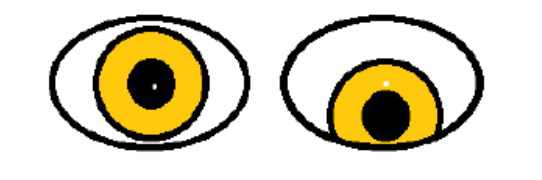
Vraag 23
Wat is de naam van de cellen die in de Figuur met de pijl aangegeven worden?
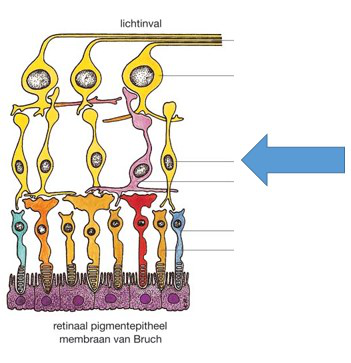
Vraag 24
Met welke test wordt het kleurenzien onderzocht?
Vraag 25
Bij fundoscopie ziet u het volgende (Figuur).
Wat is de juiste interpretatie?
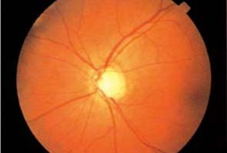
Vraag 26
U ziet een 77-jarige patiënt, één jaar na een staaroperatie met opnieuw een geleidelijke progressieve visusdaling. De visus is 0,25 en verbetert met de stenopeïsche opening.
Wat is de meest waarschijnlijke diagnose?
Vraag 27
Op de SEH presenteert zich een patiënt die na een val met een mountainbike bemerkt dat het zicht aan één oog verminderd is. Bij onderzoek ziet u het volgende (Figuur).
Wat is de diagnose?
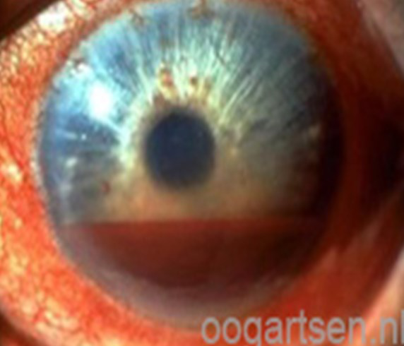
Vraag 28
U ziet een patiënt die sinds enkele dagen een tranend oog heeft. Bij onderzoek ziet u het volgende (Figuur).
Welke behandeling is nu geïndiceerd?
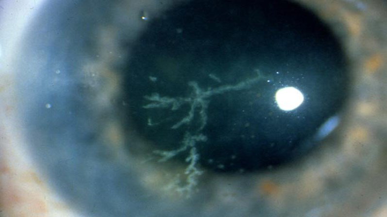
Vraag 29
Wat is de prevalentie van diabetische retinopathie bij patiënten die langer dan 10 jaar diabetes hebben?
Vraag 30
Een patiënt kreeg tijdens het bewerken van metaal het gevoel alsof er iets in zijn oog zit. Hij heeft een pijnlijk, wat rood oog. Bij het onderzoek ziet de huisarts het volgende beeld.
Wat kan de huisarts het beste doen?
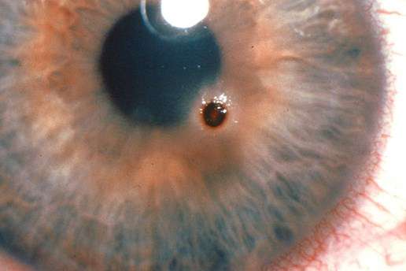
Vraag 31
Welke bewering met betrekking tot het geslotenkamerhoekglaucoom is juist?
Vraag 32
Wat is een typisch symptoom voor uveïtis anterior?
Vraag 33
Op de SEH ziet u een vijfjarig kind met onderstaand beeld (Figuur).
Welke behandeling is geïndiceerd?
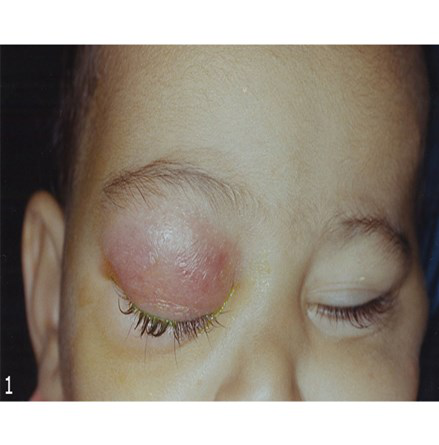
Vraag 34
U ziet een 82 jarige patiënt met een acute pijnloze visusdaling in het rechteroog. De visus is sinds vorig jaar gedaald van 0,8 naar 0,16. Tevens zijn er klachten van toenemende vervorming van het beeld met dat oog.
Welk aanvullend oogheelkundig onderzoek is hier geïndiceerd, naast fundoscopie?
Vraag 35
Wat is de primaire behandeling van openkamerhoekglaucoom?
Vraag 36
Wat is een typerende eigenschap van exsudatieve maculadegeneratie?
Vraag 37
Hoe noemen we de kransvormige afwijking bij niet-proliferatieve diabetische retinopathie hieronder?
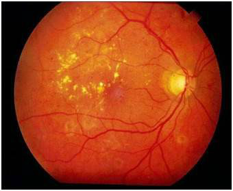
Vraag 38
Wat is een andere benaming voor een cylindrische refractie-afwijking?
Vraag 39
Bij veel vormen van uveitis zijn er associaties met systemische afwijkingen/klachten.
Wat past het best bij de diagnose ‘ziekte van Behçet’?
Vraag 40
In onderstaande figuur (Originele bron: www.anatomie-amsterdam.nl) is met pijlen de impressie van een arterie in het bot aangegeven.
Via welk foramen treedt dit vat de schedel binnen?
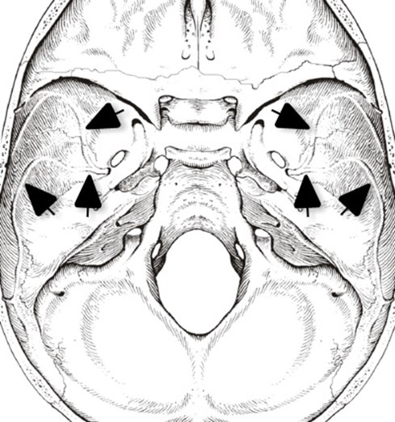
Vraag 41
Waar in het ventrikelsysteem bevindt zich de grootste hoeveelheid cerebrospinale vloeistof?
Vraag 42
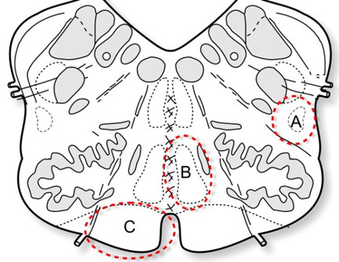
Kies de juiste alternatieven.
Onderstaande afbeelding toont een schematische weergave van een doorsnede door het myelencephalon. De gebieden aangeduid met A, B en C bevatten belangrijke baansystemen. Bij het syndroom van Wallenberg is gebied A aangedaan. De volgende symptomen zijn te verwachten bij een patiënt met het syndroom van Wallenberg: Verlies van sensibiliteit van de lichaamshelft onder de hals en van sensibiliteit van het gedeelte van het hoofd.
Vraag 43
Fasciculi zijn belangrijke verbindingen van witte stof banen binnen dezelfde hemisfeer.
Welke oriëntatie hebben de meeste vezels die horen bij de fasciculus longitudinalis superior?
Vraag 44
Een patiënt zegt tijdens een consult bij een huisarts-in-opleiding (HAIO) op een rustige, maar doordringende toon: ‘Hey vriend, het is allemaal leuk en aardig, maar jij gaat voor mij een paar doosjes slaappillen regelen. Anders wordt er iemand heel erg boos hier.’ De HAIO schrikt van deze opmerking en er valt een korte stilte. De HAIO denkt even goed na en herinnert zich dat hij de verhalen over deze patiënt wel kent en zegt tegen zichzelf: ‘Het valt wel mee, dit doet deze patiënt wel vaker’. De HAIO concludeert hier te maken te hebben met instrumentele agressie van de patiënt.
Volgens welk patroon reageert de HAIO hier?
Vraag 45
Een man van 70 jaar bezoekt de polikliniek neurologie omdat hij sinds 6 maanden steeds moeilijker loopt. Deze klachten zijn langzaamaan steeds meer opgevallen. Hij houdt erg van tennissen maar inmiddels lukt het niet meer vanwege een slepend linker been. Hij loopt nu nog 100 meter. Bij neurologisch onderzoek vindt u globaal een graad 4 parese van het linker been, met een hyperreflexie en een voetzoolreflex volgens Babinski. Opvallend genoeg is er ook enige hypertonie van de linker arm met een spoor reflexverhoging. U besluit een MRI van de CWK te maken. (Figuur A = PD opname, figuur B = T2 opname.)
Wat is de meest waarschijnlijke diagnose?
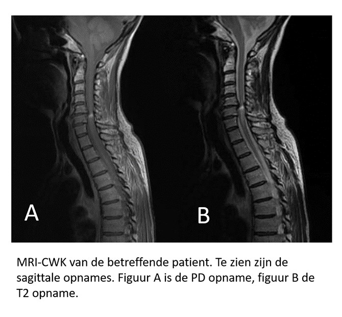
Vraag 46
Een 56-jarige vrouw bezoekt uw spreekuur in verband met beven van het hoofd. Het beven bestaat al enkele jaren en neemt geleidelijk in ernst toe. Zij heeft de indruk dat het erger wordt wanneer mensen naar haar kijken. Haar kinderen is ook opgevallen dat zij haar hoofd soms wat scheef houdt. Verder beven haar beide handen ook enigszins, met name wanneer zij iets moet vasthouden. Haar vader leed aan de ziekte van Parkinson. Bij onderzoek valt een wat schoksgewijs, onregelmatig trillen van het hoofd op. Dit neemt toe bij naar rechts kijken. Het hoofd neigt in rust iets naar de linkerschouder met een lichte rotatie naar rechts. De tremor van de handen treedt op wanneer zij op verzoek de handen voor zich uitstrekt of een bekertje water hanteert. In rust is er geen tremor van de handen zichtbaar. Er is geen stijfheid van de ledematen en het looppatroon is ongestoord.
Wat is de meest waarschijnlijke diagnose?
Vraag 47
Bij een 26-jarige vrouw met een doorgemaakte visusdaling aan het rechter oog wordt gedacht aan neuritis optica.
Welke uitspraak over aanvullende diagnostiek in het kader van een verdenking multiple sclerosis (MS) of neuromyelitis optica spectrum ziekte (NMOSD) is juist?
Vraag 48
Een 32-jarige MS patiënte gebruikt vanwege actieve ziekte onder eerstelijns therapie (interferon-beta, Avonex®), inmiddels ruim 2 jaar natalizumab (Tysabri®) en is sindsdien volledig stabiel. Zij is recent op JC virus antistoffen getest in het bloed vanwege het inschatten van het risico op progressieve leuko-encefalopathie (PML).
Welk antwoord is juist?
Vraag 49
Hydrocefalus is een frequent voorkomende complicatie van spina bifida. De behandeling van een hydrocefalus bij een kind met spina bifida is het plaatsen van een ventriculoperitoneale drain.
Welke combinatie past het best bij de eerste symptomen van een acute draindysfunctie (bij het niet goed functioneren van een drain door bijvoorbeeld een drainbreuk)?
Vraag 50
Stel één van onderstaande aandoeningen wordt vastgesteld bij het kind en de moeder blijkt drager van de aandoening.
Voor welke drie aandoeningen geeft dit ook een verhoogde kans op gezondheidsproblemen bij de moeder (meerdere antwoorden mogelijk)?
Meerdere antwoorden mogelijk.
Vraag 51
Een rechtshandige patiënt van 54 jaar heeft een half jaar geleden een herseninfarct doorgemaakt. Hij heeft daarbij een afasie en een hemiparese.
Aan welke lichaamshelft worden dan bij deze patiënt verhoogde reflexen gevonden bij lichamelijk onderzoek?
Vraag 52
Een patiënt van 72 jaar heeft een hersenbloeding links doorgemaakt. Er is een rechtszijdige paralyse van de arm en patiënt is afwisselend slaperig, apathisch of verward. Het hematoom is operatief ontlast. Vijf dagen daarna wordt enige vermindering van de uitval geconstateerd. De patiënt lijkt wat vaker helder en aanspreekbaar. Voor het CVA was deze patiënt actief en gezond. Hij gebruikte geen medicijnen. Zijn vrouw is een stukje jonger dan hij.
Waar kan deze patiënt het beste naartoe voor revalidatie?
Vraag 53
Wanneer kan bij een proefpersoon in het elektro-encefalogram (EEG) een overgang van alfaritme naar bètaritme worden gezien?
Vraag 54
Om de knipperreflex te testen wordt de cornea van een patiënt licht aangeraakt. Bij aanraking van de linker cornea knippert alleen het linkeroog. Bij aanraking van de rechter cornea knippert ook alleen het linkeroog.
Welke hersenzenuw functioneert niet goed?
Vraag 55
Wat is een ‘evoked potential’?
Vraag 56
Een patiënt komt op het spreekuur van de neuroloog. Zij geeft aan dat ze al jaren hoofdpijn heeft. Pijn is een band om haar hoofd, niet misselijk of braken. Kan gewoon de dagelijkse activiteiten blijven doen. Hiervoor gebruikt ze elke dag paracetamol (3dd1000mg).
Welke twee typen hoofdpijn zijn het meest waarschijnlijk?
Meerdere antwoorden mogelijk.
Vraag 57
Met welke twee behandelingen kun je een aanval van clusterhoofdpijn behandelen?
Meerdere antwoorden mogelijk.
Vraag 58
Bij welk van onderstaande patiënten is propranolol (selectieve bètablokker) als onderhoudsbehandeling voor migraine het MEEST gecontra-indiceerd?
Vraag 59
Op een CT-angiogram (CTA) zijn de vaten helder afgebeeld ten opzichte van het omliggende zachte weefsel omdat:
Vraag 60
U heeft een MRI onderzoek aangevraagd voor uw patiënt met een hersentumor. Op de T2-gewogen MRI beelden is de tumor goed zichtbaar.
Welke informatie kunt u op basis van de T2-gewogen beelden verkrijgen?